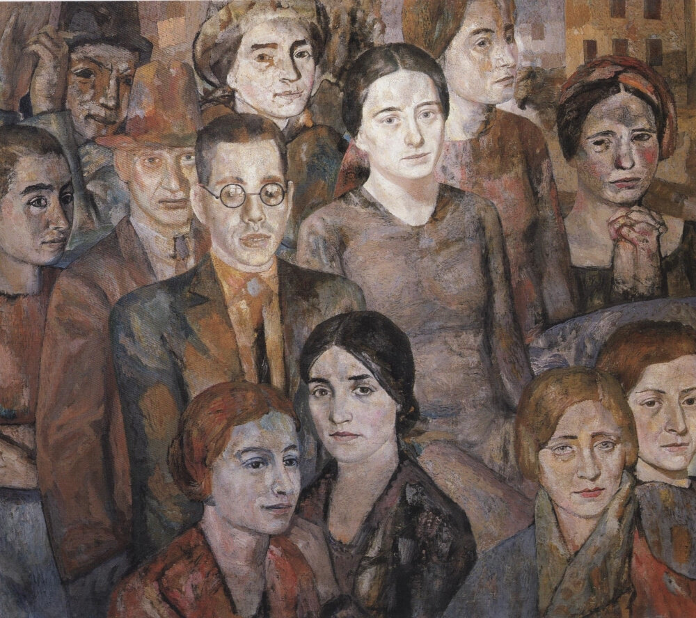

Zaltzman Pavel

Details:
b. 1912, Kazakhstan, Semirechensk

Zaltzman Pavel, Revolution's Echoes, 1950, 243 cm x 183 cm, Oil on Canvas.
Zaltzman Pavel – A Pioneer of Soviet Kazakh Art
Zaltzman Pavel, a key figure in Soviet-era Kazakh art, was known for his dramatic depictions of history and nature. Born in 1912 in Semirechensk, his works often reflect the tumultuous period of Soviet collectivization and the challenges of the 20th century.
His bold use of shadow and light, combined with vivid color schemes, create powerful narratives. Zaltzman's legacy in Kazakhstan's art scene is profound, influencing generations of artists with his unique blend of realism and symbolic imagery.